Technical Specification Group Radio Access Network;
NR;
New frequency range for NR (47.2 – 48.2 GHz);
(Release 17)
The present document has been developed within the 3rd
Generation Partnership Project (3GPP TM) and may be further
elaborated for the purposes of 3GPP.
The present document has not been subject to any approval process by the
3GPP Organizational Partners and shall not be implemented.
This Specification is provided for future development work within 3GPP
only. The Organizational Partners accept no liability for any use of
this Specification.
Specifications and Reports for implementation of the 3GPP TM
system should be obtained via the 3GPP Organizational Partners'
Publications Offices.
3GPP
Postal address
3GPP support office address
650 Route des Lucioles - Sophia Antipolis
Valbonne - FRANCE
Tel.: +33 4 92 94 42 00 Fax: +33 4 93 65 47 16
Internet
http://www.3gpp.org
Copyright
Notification
No part may be reproduced except as authorized by written
permission.
The copyright and the foregoing restriction extend to reproduction in
all media.
UMTS™ is a Trade Mark of ETSI registered for the benefit of its
members
3GPP™ is a Trade Mark of ETSI registered for the benefit of its
Members and of the 3GPP Organizational Partners
LTE™ is a Trade Mark of ETSI registered for the benefit of its Members
and of the 3GPP Organizational Partners
GSM® and the GSM logo are registered and owned by the GSM
Association
This Technical Report has been produced by the 3rd Generation
Partnership Project (3GPP).
The contents of the present document are subject to continuing work
within the TSG and may change following formal TSG approval. Should the
TSG modify the contents of the present document, it will be re-released
by the TSG with an identifying change of release date and an increase in
version number as follows:
Version x.y.z
where:
x the first digit:
1 presented to TSG for information;
2 presented to TSG for approval;
3 or greater indicates TSG approved document under change
control.
y the second digit is incremented for all changes of substance, i.e.
technical enhancements, corrections, updates, etc.
z the third digit is incremented when editorial only changes have
been incorporated in the document.
1 Scope
The present document is a technical report for Work Item on New Radio
(NR) Access Technology, covering the new frequency range between 47.2-
48.2 GHz for NR.
2 References
The following documents contain provisions which, through reference
in this text, constitute provisions of the present document.
- References are either specific (identified by date of publication,
edition number, version number, etc.) or non‑specific.
- For a specific reference, subsequent revisions do not apply.
- For a non-specific reference, the latest version applies. In the
case of a reference to a 3GPP document (including a GSM document), a
non-specific reference implicitly refers to the latest version of that
document in the same Release as the present document.
[1] 3GPP TR 21.905: "Vocabulary for 3GPP Specifications".
[2] 3GPP TS 38.141-2: "NR; Base Station (BS) conformance testing;
Part 2: Radiated conformance testing".
[3] 3GPP TS 38.133: "NR; Radio Resource Control (RRC); Protocol
specification".
[4] 3GPP TS 38.101-2: "NR; User Equipment (UE) radio transmission and
reception; Part 2: Range 2 Standalone"
[5] 3GPP TS 38.104: "NR; Base Station (BS) radio transmission and
reception".
[6] World Radiocommunication Conference 2019 (WRC-19) Final Acts,
ITU-R
[7] Title 47 of the Code of Federal Regulations (CFR) Part 30,
FCC
[8] Radio Regulations, Articles, Edition of 2020, ITU
3 Definitions of
terms, symbols and abbreviations
3.1 Terms
For the purposes of the present document, the terms given in 3GPP
TR 21.905 [1] and the following apply. A term defined in the present
document takes precedence over the definition of the same term, if any,
in 3GPP TR 21.905 [1].
3.2 Symbols
For the purposes of the present document, the following symbols
apply:
ΔFGlobal Global frequency raster granularity
ΔFRaster Channel raster granularity
FREF-Offs Offset used for calculating FREF
Fstep,X Frequency steps for the OTA transmitter spurious
emissions
NREF NR Absolute Radio Frequency Channel Number
(NR-ARFCN)
NREF-Offs Offset used for calculating NREF
3.3 Abbreviations
For the purposes of the present document, the abbreviations given in
3GPP TR 21.905 [1] and the following apply. An abbreviation defined in
the present document takes precedence over the definition of the same
abbreviation, if any, in 3GPP TR 21.905 [1].
ACLR Adjacent Channel Leakage Ratio
ACS Adjacent Channel Selectivity
BS Base Station
BW Bandwidth
EIRP Effective Isotropic Radiated Power
FR Frequency Range
GSCN Global Synchronization Channel Number
ICS In-Channel Selectivity
ITU‑R Radiocommunication Sector of the International
Telecommunication Union
NR New Radio
NR-ARFCN NR Absolute Radio Frequency Channel Number
OTA Over The Air
RF Radio Frequency
RX Receiver
SCS Sub-Carrier Spacing
TDD Time division Duplex
4 Background
4.1 ITU-R
As part of facilitating the development of 5G mobile networks, WRC-19
identified the 47 GHz frequency band (47.2-48.2 GHz) for International
Mobile Telecommunications (IMT) under Footnote 5.553B of the ITU Radio
Regulations for use in 71 nations across Africa, Europe, the Middle East
and Asia Pacific (ITU Regions 1 and 3 respectively), in addition to the
entire Americas Region (ITU Region 2, which consists of 35 nations) [6].
4.1-1 is the extract of the Radio Regulations ([8]) table of allocations
providing the services allocated in the 47.2-48.2 GHz frequency
range
Table 4.1-1: Allocation information in the 47.2-48.2 GHz frequency
range
Allocation to services
Region 1
Region 2
Region 3
47.2-47.5 FIXED
FIXED-SATELLITE (Earth-to-space) 5.550C 5.552
MOBILE 5.553B
5.552A
47.5-47.9
FIXED
FIXED-SATELLITE
(Earth-to-space) 5.550C 5.552
(space-to-Earth) 5.516B 5.554A
MOBILE 5.553B
47.5-47.9
FIXED
FIXED-SATELLITE (Earth-to-space) 5.550C 5.552
MOBILE 5.553B
47.9-48.2 FIXED
FIXED-SATELLITE (Earth-to-space) 5.550C 5.552
MOBILE 5.553B
5.552A
With the footnote 5.553B: In Region 2 and Algeria, Angola, Saudi
Arabia, Australia, Bahrain, Benin, Botswana, Burkina Faso, Burundi,
Cameroon, Central African Rep., Comoros, Congo (Rep. of the), Korea
(Rep. of), Côte d’Ivoire, Djibouti, Egypt, United Arab Emirates,
Eswatini, Ethiopia, Gabon, Gambia, Ghana, Guinea, Guinea-Bissau,
Equatorial Guinea, India, Iran (Islamic Republic of), Iraq, Japan,
Jordan, Kenya, Kuwait, Lesotho, Liberia, Libya, Lithuania, Madagascar,
Malaysia, Malawi, Mali, Morocco, Mauritius, Mauritania, Mozambique,
Namibia, Niger, Nigeria, Oman, Uganda, Qatar, the Syrian Arab Republic,
the Dem. Rep. of the Congo, Rwanda, Sao Tome and Principe, Senegal,
Seychelles, Sierra Leone, Singapore, Slovenia, Somalia, Sudan, South
Sudan, South Africa, Sweden, Tanzania, Chad, Togo, Tunisia, Zambia and
Zimbabwe, the frequency band 47.2-48.2 GHz is identified for use by
administrations wishing to implement International Mobile
Telecommunications (IMT). This identification does not preclude the use
of this frequency band by any application of the services to which it is
allocated, and does not establish any priority in the Radio Regulations.
Resolution 243 (WRC-19) applies. (WRC-19).
According to Resolution 243 (WRC-19) [6], IMT in 47.2-48.2 GHz may
coexist with satellite services and IMT base stations may require some
measure to protect the services by bilateral agreement and possibly with
site engineering solutions. Such protection measure is not a scope of
3GPP work, therefore, no specific coexistence requirement is specified
in 3GPP for the mobile and base stations to protect other services for
example by having additional spurious emission requirements.
However, it cannot be excluded any requirement is introduced by
individual administration in nation level in the future to protect the
service in the same or adjacent bands. Current 3GPP framework is
flexible enough to introduce additional requirement later by Network
signalling mechanism. Therefore, this band can be reused even if
additional coexistence requirement is introduced in future by some
administrations.
4.2 FCC
The US FCC auctioned the 47 GHz band beginning in December 2019 as
part of Auction 103. The 47 GHz band (47.2-48.2 GHz) was auctioned in 10
blocks of 100 megahertz in each PEA (Partial Economic Area) license. The
auction was concluded on 3/5/2020.
The radio regulatory requirements in FCC rules are specified in CFR
Title 47 Part 30 [7]. The channelization is 100 MHz starting from 47.2
GHz ending at 48.2 GHz. The emission requirements for both BS and UE are
aligned with other FR2 bands in FCC, i.e., bands n260, and n261 in
3GPP.
The power limits and unwanted emissions for the transportable station
(intended for CPE devices) are consistent with the existing UE power
class 1 for FR2 bands. The ones for the mobile stations are consistent
with the existing FR2 UE power class 2, 3, and 4.
Table 4.2-1 captures channel arrangement, power limits and unwanted
emissions specified by FCC.
-5 dBm/MHz (within 10% of channel bandwidth separation)
-13 dBm/MHz (outside more than 10% of channel bandwidth
apart)
5 NR Frequency band
definition
The new band 47.2-48.2 GHz is within the range of FR2 (24250 – 52600
MHz) and is proposed as a TDD band (Table 5-1). The first unused FR2
band number, n262, is proposed for this new band.
Table 5-1: New NR band in FR2
Band number
UL
DL
Duplex mode
n262
47.2 – 48.2 GHz
47.2 – 48.2 GHz
TDD
6 Channel numbering and
channel bandwidth
Though the channelization in FCC rules is 100 MHz, it is not
precluded to use 50 MHz channel bandwidth. Allocation block size is
still unknown in other administrations. For maximum flexibility, the
channel bandwidths for NR band n262 is proposed to be aligned with the
existing FR2 bands as shown in Table 6-1.
Table 6-1: NR channel bandwidth in the frequency range between
47.2-48.2 GHz
NR band
Channel bandwidth
Band number
data SCS(kHz)
50 MHz
100 MHz
200 MHz
400 MHz
n262
60
Yes
Yes
Yes
120
Yes
Yes
Yes
Yes
NR-ARFCN parameters for the global frequency raster are presented in
TS 38.104, table 6-2:
Table 6-2: NR-ARFCN parameters for the global frequency raster
Frequency range (MHz)
ΔFGlobal (kHz)
FREF-Offs (MHz)
NREF-Offs
Range of NREF
0 – 3000
5
0
0
0 – 599999
3000 – 24250
15
3000
600000
600000 – 2016666
24250 – 100000
60
24250.08
2016667
2016667 – 3279165
Using information above and the equation FREF =
FREF-Offs + ΔFGlobal (NREF –
NREF-Offs), the channel raster for n262 is also proposed to
cover all the frequency with the 60/120 kHz channel raster aligned with
the other F2 band as presented in Table 6-3.
Table 6-3: Applicable NR-ARFCN in the frequency range between
47.2-48.2 GHz
NR Operating Band
ΔFRaster
(kHz)
Uplink and Downlink
Range of NREF
(First – <Step size> – Last)
n262
60
2399166 – <1> – 2415832
120
2399167 – <2> – 2415831
The synchronization raster in the frequency range between 47.2-48.2
GHz is given in Table 6-4. The distance between applicable GSCN entries
is given by the <Step size> indicated in Table 6-4 with the step
size interval of 17.28 MHz.
Table 6-4: Applicable SS raster entries in the frequency range
between 39.5-43.5 GHz
NR Operating Band
SS Block SCS
SS Block pattern1
Range of GSCN
(First – <Step size> – Last)
n262
120 kHz
Case D
23586 – <1> – 23641
240 kHz
Case E
23588 – <2> – 23640
NOTE: SS Block pattern is defined in subclause 4.1 in TS
38.213.
7 Configurations
for intra-band contiguous CA
Table 7-1: NR CA configurations, bandwidth combination sets, and
fallback group defined for intra-band contiguous CA
NR CA configuration
Uplink CA configurations
BWChannel (MHz)
BWChannel (MHz)
BWChannel (MHz)
BWChannel (MHz)
BWChannel (MHz)
BWChannel (MHz)
BWChannel (MHz)
BWChannel (MHz)
Maximum aggregated
BW (MHz)
BCS
Fallback group
CA_n262G
CA_n262G
50, 100
100
0
3
CA_n262H
CA_n262G
CA_n262H
50, 100
100
100
0
CA_n262I
CA_n262G
CA_n262H
CA_n262I
50, 100
100
100
100
400
0
CA_n262J
CA_n262G
CA_n262H
CA_n262I
CA_n262J
50, 100
100
100
100
100
500
0
CA_n262K
CA_n262G
CA_n262H
CA_n262I
CA_n262J
CA_n262K
50, 100
100
100
100
100
100
600
0
CA_n262L
CA_n262G
CA_n262H
CA_n262I
CA_n262J
CA_n262K
CA_n262L
50, 100
100
100
100
100
100
100
700
0
CA_n262M
CA_n262G
CA_n262H
CA_n262I
CA_n262J
CA_n262K
CA_n262L
CA_n262M
50, 100
100
100
100
100
100
100
100
800
0
8 RF requirements
8.1 UE specific
8.1.1 Transmitter
characteristics
The following requirements define the maximum output power radiated
by the UE for any transmission bandwidth within the channel bandwidth
for non-CA configuration, unless otherwise stated. The period of
measurement shall be at least one sub frame (1ms). The minimum output
power values for EIRP are found in Table 8.1.1-1. The requirement is
verified with the test metric of total component of EIRP (Link=TX beam
peak direction, Meas=Link angle). The requirement for the UE which
supports a single FR2 band is specified in Table 8.1.1-1. The
requirement for the UE which supports multiple FR2 bands is specified in
both Table 8.1.1-1 and Table 8.1.1-4.
Table 8.1.1-1: UE minimum peak EIRP for power class 1, 2, 3 and 4
Operating band
Min peak EIRP (dBm)
PC1
PC2
PC3
PC4
n262
34.2
22.9
16.0
28.3
NOTE 1: Minimum peak EIRP is defined as the lower limit
without tolerance.
The maximum output power values for TRP and EIRP are found on the
Table 8.1.1-2. The max allowed EIRP is derived from regulatory
requirements [8]. The requirements are verified with the test metrics of
TRP (Link=TX beam peak direction, Meas=TRP grid) in beam locked mode and
the total component of EIRP (Link=TX beam peak direction, Meas=Link
angle.
Table 8.1.1-2: UE maximum output power limits for power class 1, 2, 3
and 4
Operating band
Power Class
Max TRP (dBm)
Max EIRP (dBm)
n262
PC1
35
55
PC2
23
43
PC3
23
43
PC4
23
43
The minimum EIRP at the 50th percentile of the
distribution of radiated power measured over the full sphere around the
UE is defined as the spherical coverage requirement and is found in
Table 8.1.1-3 below. The requirement is verified with the test metric of
the total component of EIRP (Link=Beam peak search grids, Meas=Link
angle). The requirement for the UE which supports a single FR2 band is
specified in Table 8.1.1-3. The requirement for the UE which supports
multiple FR2 bands is specified in both Table 8.1.1-3 and Table
8.1.1-4.
Table 8.1.1-3: UE spherical coverage for power class 1, 2, 3 and
4
Operating band
Min EIRP
PC1
at 85 %-tile CDF (dBm)
PC2
at 60 %-tile CDF (dBm)
PC3
at 50 %-tile CDF (dBm)
PC4
at 20 %-tile CDF (dBm)
n262
26.0
11.0
2.9
16.2
NOTE 1: Minimum EIRP at 50 %-tile CDF is defined as the
lower limit without tolerance.
For the UEs that support multiple FR2 bands, minimum requirement for
peak EIRP and EIRP spherical coverage in Tables 8.1.1-1 and 8.1.1-3
shall be decreased per band, respectively, by the peak EIRP relaxation
parameter ∆MBP,n and EIRP spherical coverage relaxation
parameter ∆MBS,n, as defined in Table 8.1.1-4.
Table 8.1.1-4: UE multi-band relaxation factors for power class 3
Band
∆MBP,n
(dB)
∆MBS,n
(dB)
n257
0.73
0.73
n258
0.6
0.7
n259
0.5
0.4
n260
0.51
0.41
n261
0.52,4
0.74
n262
0.7
0.7
Note 1: n260 peak and spherical relaxations are 0 dB
for UE that exclusively supports n261+n260
Note 2: n261 peak relaxation is 0 dB for UE that exclusively supports
n261+n260
Note 3: n257 peak and spherical relaxations are 0 dB for UE that
exclusively supports n261+n257
Note 4: n261 peak and spherical relaxations are 0 dB for UE that
exclusively supports n261+n257
The minimum output power shall not exceed the values specified in
Table 8.8.1-5 for each operating band supported. The minimum power is
verified in beam locked mode with the test metric of EIRP (Link=TX beam
peak direction, Meas=Link angle).
Table 8.1.1-5: Minimum output power for power class 1, 2, 3 and 4
Operating band
Power Class
Channel bandwidth
(MHz)
Minimum output power
(dBm)
Measurement bandwidth
(MHz)
n262
PC1
50
4
47.58
100
4
95.16
200
4
190.20
400
4
380.28
PC2, PC3 and PC4
50
-13
47.58
100
-13
95.16
200
-13
190.20
400
-13
380.28
The transmit OFF power is defined as the TRP in the channel bandwidth
when the transmitter is OFF. The transmitter is considered OFF when the
UE is not allowed to transmit on any of its ports.
The transmit OFF power shall not exceed the values specified in Table
8.8.1-6 for each operating band supported. The requirement is verified
with the test metric of TRP (Link=TX beam peak direction, Meas=TRP
grid).
Table 8.8.1-6: Transmit OFF power
Operating band
Channel bandwidth / Transmit OFF power (dBm) /
measurement bandwidth
50 MHz
100 MHz
200 MHz
400 MHz
n262
-35
-35
-35
-35
47.58 MHz
95.16 MHz
190.20 MHz
380.28 MHz
Adjacent Channel Leakage power Ratio (ACLR) is the ratio of the
filtered mean power centred on the assigned channel frequency to the
filtered mean power centred on an adjacent channel frequency. ACLR
requirement is specified for a scenario in which adjacent carrier is
another NR channel.
NR Adjacent Channel Leakage power Ratio (NRACLR) is the
ratio of the filtered mean power centred on the assigned channel
frequency to the filtered mean power centred on an adjacent channel
frequency at nominal channel spacing. The assigned NR channel power and
adjacent NR channel power are measured with rectangular filters with
measurement bandwidths specified in Table 8.8.1-7.
If the measured adjacent channel power is greater than –35 dBm then
the NRACLR shall be higher than the value specified in Table
8.8.1-7. The requirement is verified in beam locked mode with the test
metric of TRP (Link=TX beam peak direction, Meas=TRP grid).
This table 8.8.1-8 specifies the requirements for coexistence with
protected bands.
Table 8.8.1-8: Requirements
NR Band
Spurious emission
Protected band/frequency range
Frequency range (MHz)
Maximum Level (dBm)
MBW (MHz)
NOTE
n260
NR Band 257
FDL_low
-
FDL_high
-5
100
NR Band 261
FDL_low
-
FDL_high
-5
100
NR Band 262
FDL_low
-
FDL_high
-5
100
Frequency range
57000
-
66000
2
100
n261
NR Band 260
FDL_low
-
FDL_high
-2
100
NR Band 262
FDL_low
-
FDL_high
-5
100
Frequency range
57000
-
66000
2
100
n262
NR Band 260
FDL_low
-
FDL_high
-2
100
NR Band 261
FDL_low
-
FDL_high
-5
100
Frequency range
57000
-
66000
2
100
8.1.2 Receiver characteristics
The throughput shall be ≥ 95 % of the maximum throughput of the
reference measurement channels as specified in Annexes A.2.3.2 and
A.3.3.2 (with one sided dynamic OCNG Pattern OP.1 TDD for the DL-signal
as described in Annex A.5.2.1) with peak reference sensitivity specified
in Table 8.1.2-1. The requirement is verified with the test metric of
EIS (Link=RX beam peak direction, Meas=Link Angle).
For the UEs that support multiple FR2 bands, the minimum requirement
for Reference sensitivity in Table 8.1.2-1 shall be increased per band,
respectively, by the reference sensitivity relaxation parameter
∆MBP,n as specified in clause 8.1.1. The requirement for the
UE which supports a single FR2 band is specified in Table 8.1.2-1. The
requirement for the UE which supports multiple FR2 bands is specified in
both Table 8.1.2-1 and Table 8.1.1-4.
Table 8.1.2-1: Reference sensitivity for power class 1, 2, 3 and
4
Operating band
Power Class
REFSENS (dBm) / Channel bandwidth
50 MHz
100 MHz
200 MHz
400 MHz
n262
PC1
-92.5
-89.5
-86.5
-83.5
PC2
-86.8
-83.8
-80.8
-77.5
PC3
-82.8
-79.8
-76.8
-73.8
PC4
-91.0
-88.0
-85.0
-82.0
NOTE 1: The transmitter shall be set to PUMAX
as defined in clause 6.2.4.
The REFSENS requirement shall be met for an uplink transmission using
QPSK DFT-s-OFDM waveforms and for uplink transmission bandwidth less
than or equal to that specified in Table 8.1.2-1.
Unless given by Table 7.3.2.1-3 in TS 38.101-2, the minimum
requirements for reference sensitivity shall be verified with the
network signalling value NS_200 (Table 6.2.3.1-1 in TS 38.101-2)
configured. The maximum EIS at the 50th percentile of the
CCDF of EIS measured over the full sphere around the UE is defined as
the spherical coverage requirement and is found in Table 8.1.2-2 below.
The requirement is verified with the test metric of EIS (Link=Spherical
coverage grid, Meas=Link angle).
For the UEs that support multiple FR2 bands, the minimum requirement
for EIS spherical coverage in Table 8.1.2-2 shall be increased per band,
respectively, by the EIS spherical coverage relaxation parameter
∆MBS,n as specified in clause 8.1.1. The requirement for the
UE which supports a single FR2 band is specified in Table 8.1.2-2. The
requirement for the UE which supports multiple FR2 bands is specified in
both Table 8.1.2-2 and Table8.1.1-4.
Table 8.1.2-2: EIS spherical coverage for power class 1, 2, 3 and
4
Operating band
Power Class
EIS at 50th %-tile CCDF (dBm) / Channel
bandwidth
50 MHz
100 MHz
200 MHz
400 MHz
n262
PC1
-84.3
-81.3
-78.3
-75.3
PC2
-74.9
-71.9
-68.9
-65.9
PC3
-69.7
-66.7
-63.7
-60.7
PC4
-78.9
-75.9
-72.9
-69.9
NOTE 1: The transmitter shall be set to
PUMAX as defined in clause 6.2.4
NOTE 2: The EIS spherical coverage requirements are verified only
under normal thermal conditions as defined in Annex E.2.1.
The requirement shall be met for an uplink transmission using QPSK
DFT-s-OFDM waveforms and for uplink transmission bandwidth less than or
equal to that specified in Table 8.1.2-2.
Unless given by Table 7.3.2.1-3 in TS 38.101-2, the minimum
requirements for reference sensitivity shall be verified with the
network signalling value NS_200 (Table 6.2.3.1-1 in TS 38.101-2)
configured.
Adjacent Channel Selectivity (ACS) is a measure of a receiver's
ability to receive a NR signal at its assigned channel frequency in the
presence of an adjacent channel signal at a given frequency offset from
the centre frequency of the assigned channel. ACS is the ratio of the
receive filter attenuation on the assigned channel frequency to the
receive filter attenuation on the adjacent channel(s).
The requirement applies at the RIB when the AoA of the incident wave
of the wanted signal and the interfering signal are both from the
direction where peak gain is achieved.
The wanted and interfering signals apply to all supported
polarizations, under the assumption of polarization match.
The UE shall fulfil the minimum requirement specified in Table
8.1.2-3 for all values of an adjacent channel interferer up to –25 dBm.
However, it is not possible to directly measure the ACS, instead the
lower and upper range of test parameters are chosen in Table 8.1.2-4 and
Table 8.1.2-5 where the throughput shall be ≥ 95 % of the maximum
throughput of the reference measurement channels as specified in Annexes
A.2.3.2 and A.3.3.2, with one sided dynamic OCNG Pattern OP.1 TDD for
the DL-signal as described in Annex A.5.2.1. The requirement is verified
with the test metric of EIS (Link=RX beam peak direction, Meas=Link
angle).
Table 8.1.2-3: Adjacent channel selectivity
Operating band
Units
Adjacent channel selectivity / Channel bandwidth
50
MHz
100
MHz
200
MHz
400
MHz
n262
dB
22
22
22
22
Table 8.1.2-4: Adjacent channel selectivity test parameters, Case
1
Rx Parameter
Units
Channel bandwidth
50 MHz
100 MHz
200 MHz
400 MHz
Power in Transmission Bandwidth Configuration
dBm
REFSENS + 14 dB
PInterferer for band n262
dBm
REFSENS
+ 34.5 dB
REFSENS +34.5 dB
REFSENS
+34.5 dB
REFSENS
+34.5 dB
BWInterferer
MHz
50
100
200
400
FInterferer (offset)
MHz
50
/
-50
NOTE 3
100
/
-100
NOTE 3
200
/
-200
NOTE 3
400
/
-400
NOTE 3
NOTE 1: The interferer consists of the Reference
measurement channel specified in Annex A.3.2 with one sided dynamic OCNG
Pattern as described in Annex A.3.2 and set-up according to Annex C.
NOTE 2: The REFSENS power level is specified in Clause 7.3.2, which
are applicable to different UE power classes.
NOTE 3: The absolute value of the interferer offset
FInterferer (offset) shall be further adjusted to
(CEIL(|FInterferer|/SCS) + 0.5)*SCS MHz with SCS the
sub-carrier spacing of the wanted signal in MHz. Wanted and interferer
signal have same SCS.
NOTE 4: The transmitter shall be set to 4 dB below the
PUMAX,f,c as defined in clause 6.2.4, with uplink
configuration specified in Table 7.3.2.1-2.
Table 8.1.2-5: Adjacent channel selectivity test parameters, Case
2
Rx Parameter
Units
Channel bandwidth
50 MHz
100 MHz
200 MHz
400 MHz
Power in Transmission Bandwidth Configuration for band n262
dBm
-45.5
-45.5
-45.5
-45.5
PInterferer
dBm
-25
BWInterferer
MHz
50
100
200
400
FInterferer (offset)
MHz
50
/
-50
NOTE 2
100
/
-100
NOTE 2
200
/
-200
NOTE 2
400
/
-400
NOTE 2
NOTE 1: The interferer consists of the Reference
measurement channel specified in Annex 3.2 with one sided dynamic OCNG
Pattern TDD as described in Annex A and set-up according to Annex C.
NOTE 2: The absolute value of the interferer offset
FInterferer (offset) shall be further adjusted to
(CEIL(|FInterferer|/SCS) + 0.5)*SCS MHz with SCS the
sub-carrier spacing of the wanted signal in MHz. Wanted and interferer
signal have same SCS.
NOTE 3: The transmitter shall be set to 4 dB below the
PUMAX,f,c as defined in clause 6.2.4, with uplink
configuration specified in Table 7.3.2.1-2.
In-band blocking is a measure of a receiver's ability to receive a NR
signal at its assigned channel frequency in the presence of an
interferer at a given frequency offset from the centre frequency of the
assigned channel.
The throughput shall be ≥ 95 % of the maximum throughput of the
reference measurement channels as specified in Annexes A.2.3.2 and
A.3.3.2 (with one sided dynamic OCNG Pattern OP.1 TDD for the DL-signal
as described in Annex A.5.2.1). The requirement is verified with the
test metric of EIS (Link=RX beam peak direction, Meas=Link angle).
Table 8.1.2-6: In band blocking requirements
Rx parameter
Units
Channel bandwidth
50 MHz
100 MHz
200 MHz
400 MHz
Power in Transmission Bandwidth Configuration
dBm
REFSENS + 14 dB
BWInterferer
MHz
50
100
200
400
PInterferer
for band n262
dBm
REFSENS + 34.5 dB
REFSENS + 34.5 dB
REFSENS + 34.5 dB
REFSENS + 34.5 dB
FIoffset
MHz
≤ -100 & ≥ 100
NOTE 5
≤ -200 & ≥ 200
NOTE 5
≤ -400 & ≥ 400
NOTE 5
≤ -800 & ≥ 800
NOTE 5
FInterferer
MHz
FDL_low + 25
to
FDL_high - 25
FDL_low + 50
to
FDL_high - 50
FDL_low + 100
to
FDL_high - 100
FDL_low + 200
to
FDL_high - 200
NOTE 1: The interferer consists of the Reference
measurement channel specified in Annex A.3.3.2 with one sided dynamic
OCNG Pattern OP.1. TDD as described in Annex A.5.2.1 and set-up
according to Annex C.
NOTE2: The REFSENS power level is specified in Clause 7.3.2, which
are applicable according to different UE power classes.
NOTE 3: The wanted signal consists of the reference measurement
channel specified in Annex A.3.3.2 with one sided dynamic OCNG pattern
OP.1 TDD as described in Annex A.5.2.1 and set-up according to Annex
C.
NOTE 4: FIoffset is the frequency separation between the
center of the channel bandwidth and the center frequency of the
Interferer signal.
NOTE 5: The absolute value of the interferer offset
FIoffset shall be further adjusted
(CEIL(|FInterferer|/SCS) + 0.5)*SCS MHz with SCS the
sub-carrier spacing of the wanted signal in MHz. Wanted and interferer
signal have same SCS.
NOTE 6: FInterferer range values for unwanted modulated
interfering signals are interferer center frequencies.
NOTE 7: The transmitter shall be set to 4 dB below the
PUMAX,f,c as defined in clause 6.2.4, with uplink
configuration specified in Table 7.3.2.1-2.
8.2 BS specific
8.2.1 Band agnostic
requirements
The BS RF requirements summarized in Table 8.2.1-2 is band agnostic
RF requirements for FR2 which are applicable for band n262 as well.
Table 8.2.1-2: Summary on band agnostic of BS RF requirements for
FR2
BS TX side capture in TS 38.104
BS RX side capture in TS 38.104
9.2 Radiated transmit power
10.3 OTA reference sensitivity level
9.3 OTA Base station output power
10.5 OTA In-band selectivity and blocking
9.4 OTA Output power dynamics
9.5 OTA Transmit ON/OFF power
10.9 OTA In-channel selectivity
9.6 OTA Transmitted signal quality
9.7.2 OTA Occupied bandwidth
9.7.5 OTA Transmitter spurious emissions (cat A)
8.2.2 Transmitter
characteristics
8.2.2.1 Adjacent Channel
Leakage Ratio (ACLR)
The BS OTA ACLR limit for spectrum range 37 – 52.6 GHz has been
defined in TS 38.104. This is also applicable for Band n262.
8.2.2.2 OTA operating
band unwanted emissions
The BS OTA operating band unwanted emission for spectrum range 37 –
52.6 GHz has been specified in TS 38.104, section 9.7. Those limits are
applicable for Band n262.
8.2.2.3 Step
frequencies for Tx spurious emission
The 47.2-48.2 GHz frequency range has not yet been regulated in
Region where Category B limits are applicable. The Category B Tx
spurious limits doesn’t have to updated (at least for the time
being).
8.2.3 Receiver characteristics
8.2.3.1 Step
frequencies for Rx spurious emission
The band n262 shall be added to Table 8.2.3.1-1 in TS 38.104 as
proposed below.
Table 8.2.3.1-1: Step frequencies for defining the radiated Rx
spurious emission limits for BS type 2-O
Operating band
Fstep,1
(GHz)
Fstep,2
(GHz)
Fstep,3
(GHz)
Fstep,4
(GHz)
Fstep,5
(GHz)
Fstep,6
(GHz)
n257
18
23.5
25
31
32.5
41.5
n258
18
21
22.75
29
30.75
40.5
n259
23,5
35,5
38
45
47,5
59,5
n260
25
34
35.5
41.5
43
52
n261
18
25.5
26.0
29.85
30.35
38.35
n262
37.2
45.2
45.7
49.7
50.2
58.2
8.2.4 BS conformance aspects
On top of generic FR2 BS test requirements, the following 38.141-2
transmitter test requirements changes are expected due to introduction
of n262:
1. Define maximum OTA test system uncertainty for FR2 OTA transmitter
tests to be applicable up to 48.2GHz
Subclause
Maximum OTA Test System uncertainty
6.2 Radiated transmit power
Normal condition:
±1.7 dB (24.25 – 29.5 GHz)
±2.0 dB (37 – 43.5 GHz)
±2.2 dB (43.5GHz < f ≤ 48.2 GHz)
Extreme condition:
±3.1 dB (24.25 – 29.5 GHz)
±3.3 dB (37 – 43.5 GHz)
±3.5 dB (43.5 GHz < f ≤48.2 GHz)
6.3 OTA base station output power
±2.1 dB (24.25 – 29.5 GHz)
±2.4 dB (37 – 43.5 GHz)
±2.6 dB (43.5 GHz < f ≤48.2 GHz)
6.4.2 OTA RE power control dynamic range
N/A
6.4.3 OTA total power dynamic range
±0.4 dB
6.5.1 OTA transmitter OFF power
±2.9 dB (24.25 – 29.5 GHz)
±3.3 dB (37 – 43.5 GHz)
±3.6 dB (43.5 GHz < f ≤48.2 GHz)
6.5.2 OTA transmitter transient period
N/A
6.6.2 OTA frequency error
±12 Hz
6.6.3 OTA modulation quality
1%
6.6.4 OTA time alignment error
±25 ns
6.7.2 OTA occupied bandwidth
600 kHz
6.7.3 OTA ACLR
Relative ACLR:
±2.3 dB (24.25 – 29.5 GHz)
±2.6 dB (37 – 43.5 GHz)
±2.8 dB (43.5 GHz < f ≤48.2 GHz)
Absolute ACLR:
±2.7 dB (24.25 – 29.5 GHz)
±2.7 dB (37 – 43.5 GHz)
±2.9 dB (43.5 GHz < f ≤48.2 GHz)
6.7.4 OTA operating band unwanted emissions
±2.7 dB (24.25 – 29.5 GHz)
±2.7 dB (37 – 43.5 GHz)
±2.9 dB (43.5 GHz < f ≤48.2 GHz)
6.7.5.2 OTA transmitter spurious emissions, mandatory
requirements
±2.3 dB, 30 MHz ≤ f ≤ 6 GHz
±2.7 dB, 6 GHz < f ≤ 40 GHz
±5.0 dB, 40 GHz < f ≤ 60 GHz
6.7.5.4 OTA transmitter spurious emissions, additional
requirements
±2.3 dB, 30 MHz ≤ f ≤ 6 GHz
±2.7 dB, 6 GHz < f ≤ 40 GHz
±5.0 dB, 40 GHz < f ≤ 60 GHz
NOTE: Test system uncertainty values are applicable for
normal condition unless otherwise stated.
On top of generic FR2 BS test requirements, the following 38.141-2
receiver test requirements changes are expected due to introduction of
n262:
1. Introduction of step frequencies for defining the radiated Rx
spurious emission limits for n262
Operating band
Fstep,1
(GHz)
Fstep,2
(GHz)
Fstep,3
(GHz)
Fstep,4
(GHz)
Fstep,5
(GHz)
Fstep,6
(GHz)
n257
18
23.5
25
31
32.5
41.5
n258
18
21
22.75
29
30.75
40.5
n259
23.5
35.5
38
45
47.5
59.5
n260
25
34
35.5
41.5
43
52
n261
18
25.5
26.0
29.85
30.35
38.35
n262
37.2
45.2
45.7
49.7
50.2
58.2
Define maximum OTA test system uncertainty for FR2 OTA receiver tests
to be applicable up to 48.2GHz
Subclause
Maximum OTA Test System uncertainty
7.3 OTA reference sensitivity level
±2.4 dB, 24.25 GHz < f ≤ 29.5 GHz
±2.4 dB, 37 GHz < f ≤ 43.5 GHz
+3.5 dB, 43.5 GHz < f ≤ 48.2 GHz
7.5.1 OTA adjacent channel selectivity
±3.4 dB, 24.25 GHz < f ≤ 29.5 GHz
±3.4 dB, 37 GHz < f ≤ 43.5 GHz
+5.1 dB, 43.5 GHz < f ≤ 48.2 GHz
7.5.2 In-band blocking (General)
±3.4 dB, 24.25 GHz < f ≤ 29.5 GHz
±3.4 dB, 37 GHz < f ≤ 43.5 GHz
+5.1 dB, 43.5 GHz < f ≤ 48.2 GHz
7.6 OTA out-of-band blocking
±3.6 dB, 24.25 GHz < f ≤ 29.5 GHz
±3.6 dB, 37 GHz < f ≤ 43.5 GHz
+4.5 dB, 43.5 GHz < f ≤ 48.2 GHz
7.7 OTA receiver spurious emissions
±2.5 dB, 30 MHz ≤ f ≤ 6 GHz
±2.7 dB, 6 GHz < f ≤ 40 GHz
±5.0 dB, 40 GHz < f ≤ 60 GHz
7.8 OTA receiver intermodulation
±3.9 dB, 24.25 GHz < f ≤ 29.5 GHz
±3.9 dB, 37 GHz < f ≤ 43.5 GHz
+5.4 dB, 43.5 GHz < f ≤ 48.2 GHz
7.9 OTA in-channel selectivity
±3.4 dB, 24.25 GHz < f ≤ 29.5 GHz
±3.4 dB, 37 GHz < f ≤ 43.5 GHz
+5.1 dB, 43.5 GHz < f ≤ 48.2 GHz
NOTE1: Test system uncertainty values are applicable
for normal condition unless otherwise stated.
NOTE 2: The maximum OTA Test System uncertainty in the frequency
range 43.5 GHz < f ≤ 48.2 GHz is a composite of signal generator and
external RF front-end with mixer. Future evaluation and improvement of
uncertainty values will be performed once the signal generator internal
RF supports higher frequency so external mixer is not used.
9 RRM
9.1 Frequency bands grouping
9.2
Conditions for RRM requirements applicability for operating bands
9.2.1
Minimum SSB_RP values for Rx Beam Peak angle of arrival
9.2.2
Minimum SSB_RP values for angle of arrival within Spherical
coverage
10 Performance requirements
10.1 Base station requirements
The BS demodulation requirements in 38.104 are defined for the whole
of FR2 (i.e. up to 52.6GHz) and thus can be re-used for n262. The SNR is
not expected to differ for any of the requirements.
Conformance testing for the base station requirements is limited by
the OTA link budget in the test chamber and available output power of
test equipment. For the existing FR2 bands, the maximum testable SNR is
limited to 20dB due to link budget considerations.
For n262, the pathloss will differ to some degree, and also the
availability of power amplifiers for the test equipment may differ. The
link budget has been checked to determine whether also for n262 the 20dB
assumption is valid.
The test set-up in figure 10.1-1 is assumed. After the output of the
test equipment, a pre-amplifier and PA are included to increase the
power available in the test chamber.
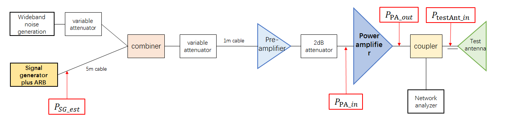
Figure 10.1-1 BS test setup
Table 10.1-1 captures assumptions on the losses and amplifier gains
for the test setup.
Table 10.1-1 Assumptions for test set-up losses/gains
At the RIB (i.e. BS antenna array), if a reference sensitivity of
-100dBm in 50MHz is assumed then according to 38.141-2, the AWGN level
at the RIB should be -79dBm for a 200MHz channel. For the wanted signal,
a margin of 10dB for the fading channel is assumed and an SNR of 20dB.
Thus, the wanted signal power should be -79dBm AWGN + 20dB SNR + 10dB
margin for fading channel = -49dBm.
It is worth to note that the in-band blocking level for a BS with a
sensitivity of -100dBm in 50MHz is -70dBm. Thus, the in-channel power
here is considerably larger than the in-band blocking level. This
reflects the reduced risk of blocking in FR2 due to beamforming. The
-49dBm used in this estimate is an absolute worst case with high SNR,
high channel margin in order to gain an understanding whether the link
budget in the chamber can work in the worst case scenario.
To estimate the output power requirement for the PA, the pathloss
within the test chamber should be considered. Two types of test chamber
have been studied; Indoor Anechoic Chamber (IAC) and Compact Antenna
Test Range (CATR).
For the IAC, the test antenna must be placed in the far-field of the
BS array. The far field distance is related to the dimensions of the BS.
Two BS dimensions have been considered; 5 times and 10 times the
wavelength. Combining the chamber pathloss with the test setup
Ltotal and the power level at the RIB enables the needed
output power levels at the PA output and signal generator to be
calculated.
Table 10.1-2: Power requirements for BS demodulation testing in an
IAC
Carrier Frequency (GHz)
47
38
Note
Dimension (m)
0.15
0.25
0.15
0.25
5 times of wave length and 10 times of wave length
A signal generator can be estimated to provide an output power of up
to -10dBm with the required linearity. For both the CATR and IAC, the
output power from the signal generator will not be a limiting
factor.
Expectations on PA output power in some other frequency ranges are
indicated in table 10.1-4.
Table 10.1-4: PA output power expectations
Frequency (GHz)
2~20
18~26.5
27~31
30~40
\(\mathbf{G}_{\mathbf{PA}}\)
(dB)
43
40
43
37
OIP3 (dBm)
42
40
42
37
\(\mathbf{NF}_{\mathbf{PA}}\)
(dB)
10
10
10
10
\(\mathbf{P}_{\mathbf{PA\_ out\_
max}}\)(dBm)
27
25
27
22
\(\mathbf{P}_{\mathbf{PA\_ in\_
max}}\) (dBm)
-16
-15
-16
-15
If PAs are available for 47GHz with the same output power as those
for 30-40GHz are available, then the link budget is only just
achievable. However, the estimate of the needed input power to the RIB
has been based on a sensitivity level of -100 dBm/50MHz, large fading
channel variation, 200MHz bandwidth and a 20dB SNR (the largest SNR for
200MHz is actually around 15dB). which are all rather pessimistic and so
in most situations a margin is likely to be available.
Based on the link budget assessment, all of the conformance tests for
BS demodulation requirements are retained for n262.
10.2 UE requirements
The UE performance requirements in 38.101-4 have prior to the
introduction of n262 been specified for frequencies of up to 40GHz. To
check whether the requirements can also be applicable to band n262, it
was agreed to perform simulations for three of the most stringent test
cases: TS38.101-1 Table 7.2.2.2.1-4 Test 2-6, Table 7.2.2.2.1-3 Test
1-4, Table 7.2.2.2.1-5 Test 3-1. It is assumed that if no significant
difference is observable with this test cases between 40GHz and 47GHz
then no difference will occur for all other requirements. Phase noise
model from TR 38.803 Example 2 was considered as a baseline assumption
for evaluation. Same time other phase noise models were not
precluded.
Figures 10.2-1 to 10.2-6 and Tables 10.2-1 and 10.2-2 summarize all
simulation results submitted by different companies.
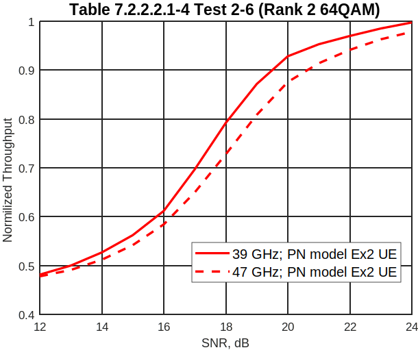
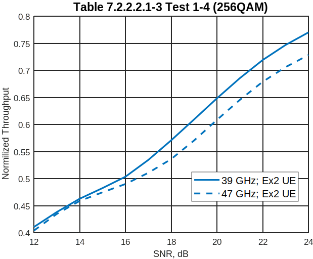
Figure 10.2-1 Intel, R4-2109218
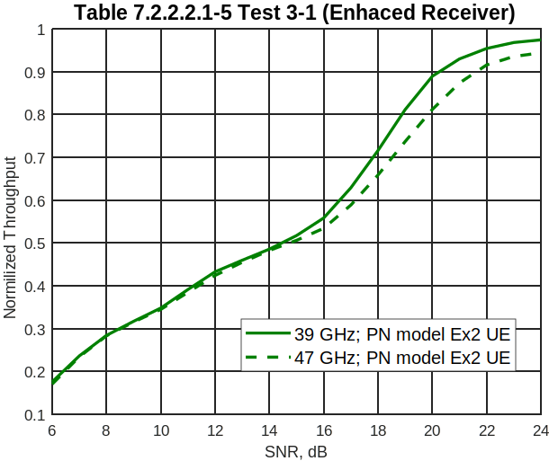
Figure 10.2-2 Intel, R4-2109218
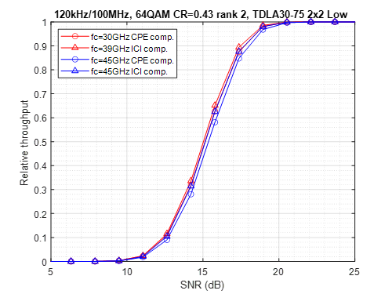
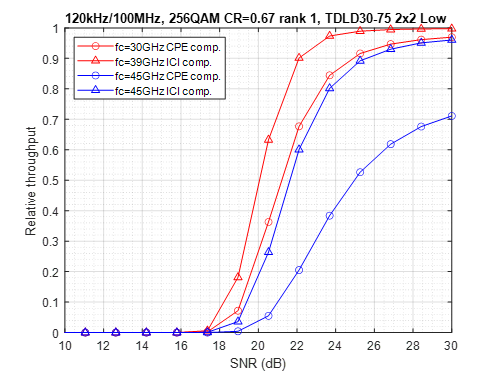
Figure 10.2-3 Ericsson, R4-2113459. Phase noise model: Example 2 in
TR38.803.
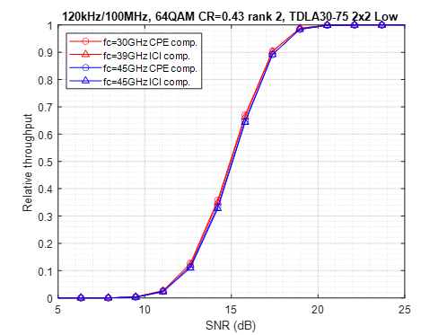
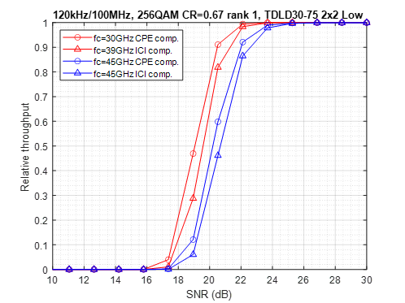
Figure 10.2-4 Ericsson, R4-2113459. Phase noise model: Example 2 in
in R4-2010176 Proposal 1
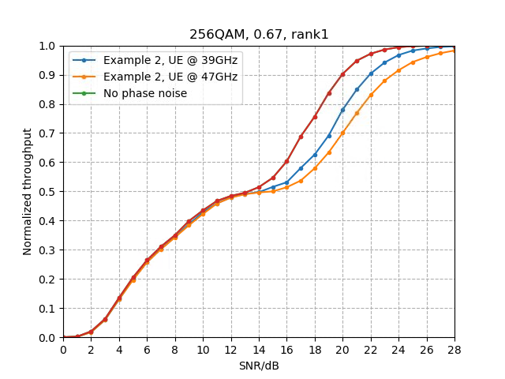
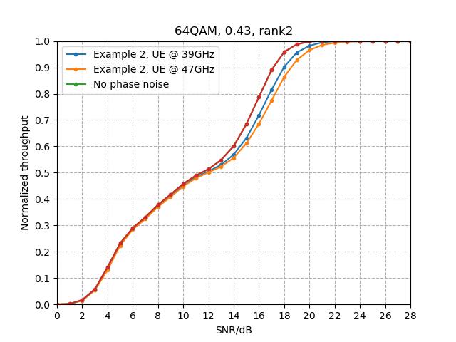
Figure 10.2-5 Huawei, HiSilicon, R4-2113796
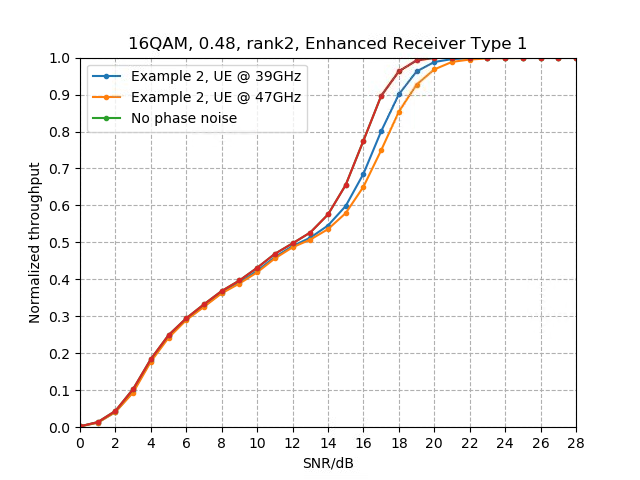
Figure 10.2-6 Huawei, HiSilicon, R4-2113796
Table 10.2-1: Qualcomm, R4-2112250.
Test Number
Table
Test
Carrier Frequency
Alignment SNR
(@70% Peak Throughput)
Test 3-1
7.2.2.2.1-3
16QAM Rank 1 with Enhanced Receiver Type 1
39GHz
16.05 dB
16QAM Rank 1 with Enhanced Receiver Type 1
48GHz
16.35dB
Table 10.2-2: Qualcomm, R4-2112250.
Test Number
Table
Test
Carrier Frequency
Alignment SNR
(@70% Peak Throughput)
Test 2-6
7.2.2.2.1-4
64QAM (MCS 17), Rank 2
39GHz
15.55 dB
64QAM (MCS 17), Rank 2
48GHz
15.85 dB
Some companies observed small performance difference at 70% of the
maximum throughput for test cases Table 7.2.2.2.1-4 Test 2-6 and Table
7.2.2.2.1-5 Test 3-1. Other companies observed about one dB degradation
for these tests. To provide sufficient margin and same time not to relax
requirements too much it was concluded to add additional margin as 0.5
dB for band n262 for these test cases.
For test case Table 7.2.2.2.1-3 Test 1-4 it was also concluded on
necessity of the additional margin to extend this requirement to band
n262. The 1.5 dB margin was agreed.
Although RAN5 specifies UE conformance testing, absolute Noc levels
are specified in 38.101-4. For n262, the Noc levels are calculated based
on the reference sensitivity as described in section 4.5.3.3 of TS
38.101-2.
Annex A
(informative):
Change history
Change
history
Date
Meeting
TDoc
CR
Rev
Cat
Subject/Comment
New version
08/2020
RAN4-96e
TR Skeleton
0.0.0
02/2021
RAN4-98e
Agreed Text Proposal from
RAN4#97-e:
R4-2016883 BS RF Requirements and System parameters - TP to TR
38.847
R4-2016884 TP to TR 38.847: BS RF requirements
0.1.0
04/2021
RAN4-98bis-e
Agreed Text Proposal from
RAN4#98-e:
R4-2103204 TP to TR 38.847: UE Tx requirement for n262
R4-2103206 TP to TR 38.847: UE Rx requirement for n262
R4-2103874 TP to TR 38.847: BS conformance aspects
0.2.0
05/2021
RAN4#99-e
Fixed some references and tables
numbering issues.
Agreed Text Proposal from RAN4#98-bis-e:
R4-2104682 pCR to TR 38.847: BS demodulation requirements
R4-2106860 pCR to 38.847: UE performance requirements
R4-2107038 TP to TR 38.847: BS conformance aspects
0.3.0
08/2021
RAN4#100-e
Agreed Text Proposal from
RAN4#100-e:
R4-2113735 TP to TR 38.847
R4-2115634 TP to TR 38.847: BS conformance aspects
0.4.0
09/2021
RAN#93-e
Version and date updates
Submitted to RAN #93-e for Approval.
1.0.0
09/2021
RAN#93-e
Editorial corrections
1.0.1
09-2021
RAN#93-e
TR 38.847
17.0.0
2021-12
RAN#94
RP-212836
0001
F
CR to TR 38.847 UE performance
requirements
17.1.0
2023-03
RAN#99
RP-230513
0002
F
CR to 38.847: BS Conformance, removal of
[] for 47GHz Rx test